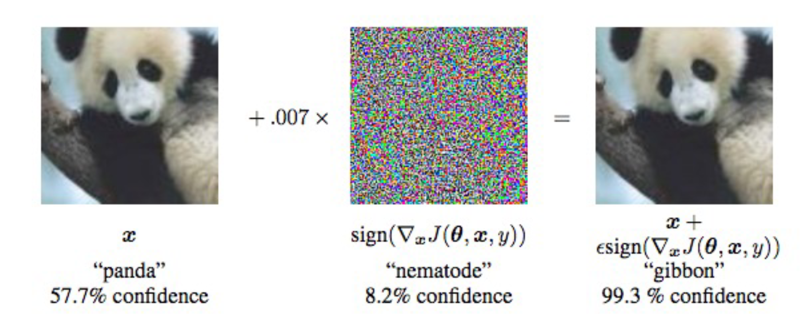
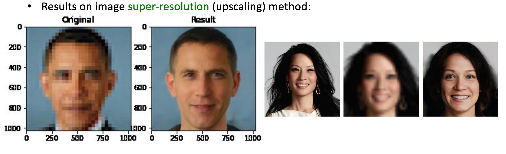
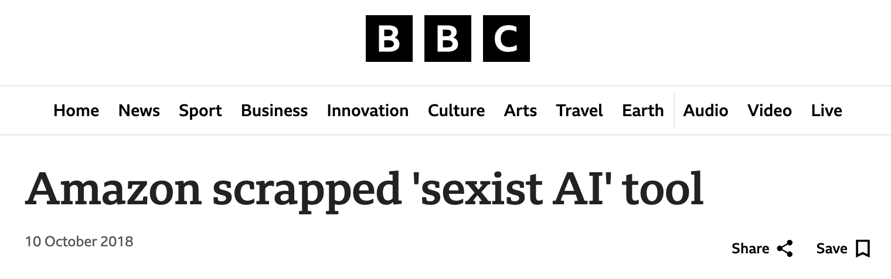

Code
import numpy as np
import matplotlib.pyplot as plt
# from graphviz import Digraph
from IPython.display import display
from ipywidgets import interact, FloatSlider
np.random.seed(19_750)import numpy as np
import matplotlib.pyplot as plt
# from graphviz import Digraph
from IPython.display import display
from ipywidgets import interact, FloatSlider
np.random.seed(19_750)What is Deep Learning, Machine Learning, and Artificial Intelligence?

A Simple History of AI In the 1950s, scientists dreamed of building machines that could think and learn like humans. They created early models called neural networks, inspired by how the brain works. One of the first, called the Perceptron, was built by Frank Rosenblatt. But back then, computers were too slow, and there wasn’t enough data to make these systems work well. So, researchers moved on to simpler methods, largely ignoring neural networks.
In 2012, everything changed with a breakthrough called AlexNet. It was a large neural network that could look at pictures and recognize objects (like cats, dogs and cars etc.) better than anything before. It was taught how to recognize images very efficiently and which allowed it to see millions of images and learning how to recognize patterns, stitch them together, and make predictions.

In 2017, another big leap happened with the invention of Transformers. These systems could understand very long sequences (like language) at once, making them great at tasks like writing, translating, and summarizing text. This is the technology behind tools like ChatGPT, which can chat, write stories, or even help with coding.
# Generate 20 random x values
x = np.linspace(0, 10, 20)
# Compute y values with some noise
y = x**2 + np.random.normal(0, 5, x.shape)
# Plot the points using seaborn with slightly bigger points
plt.figure(figsize=(8, 5))
plt.scatter(x=x, y=y, s=100, alpha=0.6, label='Data')
plt.title('Social media followers vs Engagement')
plt.xlabel('X (Followers in thousands)')
plt.ylabel('Y (Engagement in thousands)')
plt.show()This is a plot of social media followers vs engagement. Lets say you want to predict engagement based on followers.
degree = 2
# Fit a polynomial of given degree to the data using numpy
coeffs = np.polyfit(x, y, degree)
# Compute predicted y values
y_pred_2 = np.polyval(coeffs, x)
# Plot the original data and the fitted polynomial
plt.figure(figsize=(8, 5))
plt.scatter(x=x, y=y, s=100, alpha=0.6, label='Data')
plt.plot(x, y_pred_2, color='red', label=f'Degree {degree} Fit')
plt.title('Social media followers vs Engagement')
plt.xlabel('X (Followers in thousands)')
plt.ylabel('Y (Engagement in thousands)')
plt.show()This red line “fit” to the data
degree = 20
# Fit a polynomial of given degree to the data using numpy
coeffs = np.polyfit(x, y, degree)
# Compute predicted y values
y_pred_15 = np.polyval(coeffs, x)
# Plot the original data and the fitted polynomial
plt.figure(figsize=(8, 5))
plt.scatter(x=x, y=y, s=100, alpha=0.6, label='Data')
plt.plot(x, y_pred_15, color='orange', label=f'Degree {degree} Fit')
plt.title('Social media followers vs Engagement')
plt.xlabel('X (Followers in thousands)')
plt.ylabel('Y (Engagement in thousands)')
plt.show()This orange line “fit” to the data
plt.figure(figsize=(8, 5))
plt.scatter(x=x, y=y, s=100, alpha=0.6, label='Data')
plt.plot(x, y_pred_15, color='orange', label=f'Degree {15} Fit')
plt.plot(x, y_pred_2, color='red', label=f'Degree {2} Fit')
plt.title('Social media followers vs Engagement')
plt.xlabel('X (Followers in thousands)')
plt.ylabel('Y (Engagement in thousands)')
plt.show()What is better?
The red line seems better, but the orange line has lower error since it goes directly through ALL points.
Say you put a point between some of the blue dots? Is the orange line more likely to predict a better position for the points or the red?
What about if you add points to the left and right of the existing points?
To prevent your model from memorizing your data, you intentionally split your data into 2. The training data and testing data. The test data should not influence training in any way.
Credit - CPSC 330 
Key Takeaways
This is the fundamental rule of learning.
Example:
Say your vision model to drive self-driving cars is trained with lots of videos from Los Angeles (Now you drive to Vancouver and realize that your system works a lot worse. One reason for this is that the model is too used to the LA data.
In reality, self-driving cars are trained on data from all types of cities, suburbs, and rural areas, as well as in all driving conditions and weather. But when highly unexpected things happen (like sandstorms or forest fires that make the sky orange), these systems perform worse.

TLDR; Your predictor should generalize and find the underlying pattern not memorize that data it has seen like a puppet.
x = np.linspace(1, 50, 100)
# Generate y values for -log(x) with noise
y_neg_log = np.log(x) + np.random.normal(scale=0.1, size=x.shape)
# Create the scatter plot
plt.figure(figsize=(8, 5))
plt.scatter(x, y_neg_log, label='Data', color='red', s=75, alpha=0.6)
plt.title('Years since 1960 vs Population of a city (in millions)')
plt.xlabel('X (Years since 1960)')
plt.ylabel('Y (Population in millions)')
plt.tight_layout()
plt.show()We cannot draw a line through this data.
# Original data
x = np.linspace(1, 50, 100)
y_neg_log = np.log(x) + np.random.normal(scale=0.1, size=x.shape)
# Apply a square root transformation to x
x_transformed = np.sqrt(x)
# Create the scatter plot
plt.figure(figsize=(8, 5))
plt.scatter(x_transformed, y_neg_log, label='Stretched Data', color='blue', s=75, alpha=0.6)
plt.title('Years since 1960 vs Population of a city (in millions)')
plt.xlabel('$\sqrt{X}$ (Years since 1960)')
plt.ylabel('Y (Population in millions)')
plt.tight_layout()
plt.show()Here we compressed the X axis and made the data easier to draw a line through.
from sklearn.linear_model import Ridge
# Original data
x = np.linspace(1, 50, 100)
y_neg_log = np.log(x) + np.random.normal(scale=0.1, size=x.shape)
# Apply a square root transformation to x
x_transformed = np.sqrt(x).reshape(-1, 1)
# Fit Ridge regression
ridge = Ridge(alpha=1.0)
ridge.fit(x_transformed, y_neg_log)
y_pred = ridge.predict(x_transformed)
# Create the scatter plot + ridge line
plt.figure(figsize=(8, 5))
plt.scatter(x_transformed, y_neg_log, label='Stretched Data', color='blue', s=75, alpha=0.6)
plt.plot(x_transformed, y_pred, color='red', linewidth=2, label='Ridge Regression Line')
plt.title('Years since 1960 vs Population of a city (in millions)')
plt.xlabel('X (Years since 1960)')
plt.ylabel('Y (Population in millions) COMPRESSED')
plt.legend()
plt.tight_layout()
plt.show()This is what neural networks do. They make it easier to draw a line through or draw a line separating the data. We will use another example to make it clearer.
Neural networks facilitate the “Make the data easier to work with” step. They do so by learning the transformation needed to do so by looking at the data.
Another example where we classify data.
Say we have data that has coordinates (longitude and latitude), and the data are people. You want to classify the people based on “living in urban areas” and “living in rural areas”. This data can look like the following:
import numpy as np
import matplotlib.pyplot as plt
from sklearn.model_selection import train_test_split
rng = np.random.default_rng(19_750)
r_city, r_rural = 2.0, 5.0
# Generate "city" as a dense filled disk (class 1)
n_city = 1000
theta_c = 2 * np.pi * rng.random(n_city)
r_c = r_city * np.sqrt(rng.random(n_city)) # uniform over area
x_c = r_c * np.cos(theta_c)
y_c = r_c * np.sin(theta_c)
# Generate "rural" as a sparse thin ring (class 0)
n_rural = 250
theta_r = 2 * np.pi * rng.random(n_rural)
r_r = r_rural + rng.normal(0, 0.35, n_rural) # thin ring
x_r = r_r * np.cos(theta_r)
y_r = r_r * np.sin(theta_r)
# Stack data
X = np.vstack([np.c_[x_r, y_r], np.c_[x_c, y_c]])
y = np.concatenate([np.zeros(n_rural, dtype=int), np.ones(n_city, dtype=int)])
Xtr, Xte, ytr, yte = train_test_split(X, y, test_size=0.3, stratify=y, random_state=42)
# Just plot the data (train and test, color by class)
plt.figure(figsize=(6, 5))
plt.scatter(Xtr[ytr == 1, 0], Xtr[ytr == 1, 1], s=15, c='gold', edgecolor='k', label='City (train)')
plt.scatter(Xtr[ytr == 0, 0], Xtr[ytr == 0, 1], s=15, c='purple', edgecolor='k', label='Rural (train)')
plt.scatter(Xte[yte == 1, 0], Xte[yte == 1, 1], s=25, c='gold', edgecolor='k', marker='^', label='City (test)')
plt.scatter(Xte[yte == 0, 0], Xte[yte == 0, 1], s=25, c='purple', edgecolor='k', marker='^', label='Rural (test)')
plt.legend(loc='best', fontsize=9)
plt.title("Urban vs Rural Areas Population")
plt.gca().set_aspect('equal')
plt.tight_layout()
plt.show()You might want to do this classifying for resource allocation. For example, where should I put more fire stations?
Though here, it is just a simple example/demonstration. You cannot draw a line to seperate the 2 polulations.
import numpy as np
import matplotlib.pyplot as plt
from sklearn.model_selection import train_test_split
from sklearn.neural_network import MLPClassifier
from sklearn.metrics import accuracy_score
Xtr, Xte, ytr, yte = train_test_split(X, y, test_size=0.3, stratify=y, random_state=42)
# Small neural net (non-linear)
mlp = MLPClassifier(hidden_layer_sizes=(8, 8), activation='relu', solver='lbfgs', alpha=1e-4, random_state=42, max_iter=2000)
mlp.fit(Xtr, ytr)
acc_mlp = accuracy_score(yte, mlp.predict(Xte))
# Decision boundary visualization for MLP only
x_min, x_max = X[:, 0].min() - 1.0, X[:, 0].max() + 1.0
y_min, y_max = X[:, 1].min() - 1.0, X[:, 1].max() + 1.0
xx, yy = np.meshgrid(np.linspace(x_min, x_max, 400), np.linspace(y_min, y_max, 400))
grid = np.c_[xx.ravel(), yy.ravel()]
Z_mlp = mlp.predict_proba(grid)[:, 1].reshape(xx.shape)
fig, ax = plt.subplots(figsize=(6, 5))
cs = ax.contourf(xx, yy, Z_mlp, levels=[0.0, 0.5, 1.0], alpha=0.25, cmap='coolwarm')
ax.scatter(Xtr[ytr == 1, 0], Xtr[ytr == 1, 1], s=15, c='gold', edgecolor='k', label='City (train)')
ax.scatter(Xtr[ytr == 0, 0], Xtr[ytr == 0, 1], s=15, c='purple', edgecolor='k', label='Rural (train)')
ax.scatter(Xte[yte == 1, 0], Xte[yte == 1, 1], s=25, c='gold', edgecolor='k', marker='^', label='City (test)')
ax.scatter(Xte[yte == 0, 0], Xte[yte == 0, 1], s=25, c='purple', edgecolor='k', marker='^', label='Rural (test)')
ax.set_title(f"Neural net (MLP) — acc={acc_mlp:.3f}")
ax.set_aspect('equal')
ax.legend(loc='upper right', fontsize=8)
plt.title("Urban vs Rural Areas Population\nDecision Boundry using a Neural Network")
plt.tight_layout()
plt.show()What might have the neural network done to classify things correctly?
This is a very difficult problem. We only have glimses into what neural networks learn and how they internally represent things.
But in this case, we could venture a guess and suggest that the model may be doing something like this:
import numpy as np
import matplotlib.pyplot as plt
from sklearn.model_selection import train_test_split
rng = np.random.default_rng(19_750)
r_city, r_rural = 2.0, 5.0
# Generate "city" as a dense filled disk (class 1)
n_city = 1000
theta_c = 2 * np.pi * rng.random(n_city)
r_c = r_city * np.sqrt(rng.random(n_city))
x_c = r_c * np.cos(theta_c)
y_c = r_c * np.sin(theta_c)
# Generate "rural" as a sparse thin ring (class 0)
n_rural = 250
theta_r = 2 * np.pi * rng.random(n_rural)
r_r = r_rural + rng.normal(0, 0.35, n_rural)
x_r = r_r * np.cos(theta_r)
y_r = r_r * np.sin(theta_r)
# Vertical separation for classes
z_c = np.full_like(x_c, 1.5) # City at height 1.5
z_r = np.full_like(x_r, -1.5) # Rural at height -1.5
# Stack data
X_city = np.c_[x_c, y_c, z_c]
X_rural = np.c_[x_r, y_r, z_r]
X = np.vstack([X_rural, X_city])
y = np.concatenate([np.zeros(n_rural, dtype=int), np.ones(n_city, dtype=int)])
Xtr, Xte, ytr, yte = train_test_split(X, y, test_size=0.3, stratify=y, random_state=1975)
# 3D plot with vertical separation
fig = plt.figure(figsize=(6, 5))
ax = fig.add_subplot(111, projection='3d')
# Train points
ax.scatter(Xtr[ytr == 1, 0], Xtr[ytr == 1, 1], Xtr[ytr == 1, 2], s=15, c='gold', edgecolor='k', label='City (train)')
ax.scatter(Xtr[ytr == 0, 0], Xtr[ytr == 0, 1], Xtr[ytr == 0, 2], s=15, c='purple', edgecolor='k', label='Rural (train)')
# Test points
ax.scatter(Xte[yte == 1, 0], Xte[yte == 1, 1], Xte[yte == 1, 2], s=25, c='gold', edgecolor='k', marker='^', label='City (test)')
ax.scatter(Xte[yte == 0, 0], Xte[yte == 0, 1], Xte[yte == 0, 2], s=25, c='purple', edgecolor='k', marker='^', label='Rural (test)')
# Draw a separating plane between classes (e.g., z=0)
xlim = ax.get_xlim()
ylim = ax.get_ylim()
xx, yy = np.meshgrid(np.linspace(*xlim, 20), np.linspace(*ylim, 20))
zz = np.zeros_like(xx) # Plane at z=0
ax.plot_surface(xx, yy, zz, alpha=0.5, color='gray', edgecolor='none')
ax.set_title("Urban vs Rural Areas Population (3D with vertical class separation)")
ax.set_xlabel("X")
ax.set_ylabel("Y")
ax.set_zlabel("Class (vertical separation)")
ax.view_init(elev=25, azim=30)
ax.legend(loc='best', fontsize=9)
plt.tight_layout()
plt.show()This could be a good guess (approximately) of what a neural network does to separate between rural and urban populations.
So what drives the model to do this? How does it decide to do this?
One thing to note is that we don’t tell the model to do something like this; it decides on its own. This is why we don’t understand how AI works in any practical model. We simply specify the problem.
Here, the specification can be “minimize the mistakes in classifying between the 2 populations”. Then you pick the correct parameters (using calculus), and the model has learned to do its job.
Deep learning is simply when you make these geometric decisions in steps rather than all at once this has made models much more practical and powerful
What is the point of this?
Model any written language that has ever existed. Translate between any languages. ChatGPT simply classifies the next word and is able to reason, help, deceive, and “think”.
Predict the weather.
Model any type of music or images, or everything altogether to create videos.
Drive cars, move robots, and do surgery (poorly for now).
Predict the stock market (to some extent). Detect fraud every time you swipe your credit card.
Spot cancer, strokes, and blood clots. Discover new drugs and select genes.
But with all these capabilities come risks. These can be very broadly characterized into:
Some inherent risk can emerge from models being trained on biased (human) data.
Inherent

Credit - CPSC 340, L35
Misuse
Credit - The Independent
Inherent

Credit - CPSC 340, L35
Inherent
Credit - CPSC 340, L35
Misuse
Credit - CPSC 340, L35
Misuse & Inherent

Credit - BBC
Misuse
Credit - MIT Technology Review
More:
People will misuse AI, and computer scientists are working on trying to make that harder. But turning models “unsafe” and “harmful” is still very easy to do. For free within ~3 hours for a smaller open version of ChatGPT.
For the inherent risks of AI, we need to invest more time and energy into understanding what the models are learning rather than purely focusing on the results or what the models can do.
We also need people from different domains to understand, use and play a role in making AI (eg. curating diverse data). In the meantime, we must be careful not to give AI control over systems where its unexpected performance can hurt people (eg, deciding if someone can go to jail)
run = False
if run:
import numpy as np
import matplotlib.pyplot as plt
from ipywidgets import interact, FloatSlider
x = np.linspace(-5, 5, 50)
y = 2 * x + 1 + np.random.normal(0, 2, 50)
slopes = np.linspace(-4, 6, 100)
mse = lambda s, i=1.0: np.mean((y - (s * x + i)) ** 2)
mse_vals = [mse(s) for s in slopes]
contour_slopes = np.linspace(-10, 12, 100)
contour_intercepts = np.linspace(-8, 10, 100)
S, I = np.meshgrid(contour_slopes, contour_intercepts)
Z = np.array([[mse(S[i, j], I[i, j]) for j in range(len(contour_slopes))] for i in range(len(contour_intercepts))])
def plot(s):
i, m = 1.0, mse(s)
fig, ax = plt.subplots(1, 3, figsize=(15, 4))
ax[0].plot(slopes, mse_vals)
ax[0].scatter(s, m, color='r')
ax[0].set(title="Loss Landscape - MOVE THE SLIDER", xlabel="Parameter", ylabel="Error")
yp = s * x + i
ax[1].scatter(x, y)
ax[1].plot(x, yp, 'orange')
ax[1].set(title="Linear Model")
cp = ax[2].contour(S, I, Z, 20)
ax[2].scatter(s, i, color='r', marker='x', s=100)
ax[2].set(title="Landscape Contour Plot", xlabel="Slope", ylabel="Intercept")
fig.colorbar(cp, ax=ax[2], label="MSE")
plt.tight_layout()
plt.show()
interact(plot, s=FloatSlider(value=2, min=-4, max=6, step=0.1))